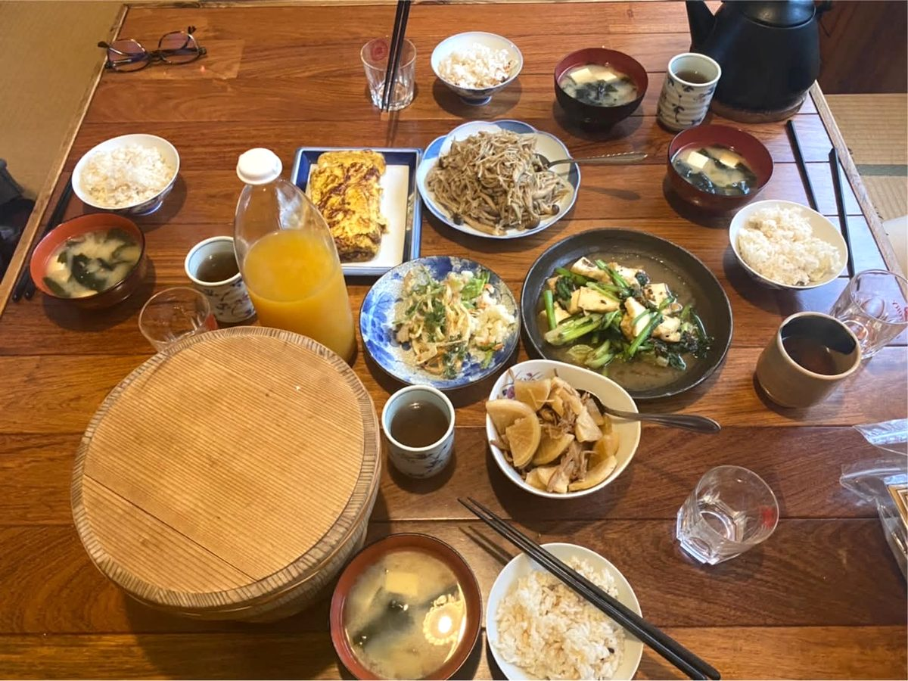

食事
一緒に作って食べるか、自分で作るか、隣の島まで食べに行くか。

シェアごはん
ほかのゲストやスタッフと一緒に、作る・食べる・片すをシェアします。島の方が飛び入りで加わることもあります。
料理が苦手でも大丈夫です。できることを手伝ってもらいます。得意な方は「今日は板長やるよ」と言ってください。
島の人が差し入れを持って来て宴会になることもあれば、結局ひとりのこともあります。
- 夕飯
- 1,600円
- 朝飯
- 700円
- お休み
- 火曜の夜、日曜の夜
貸切のときもお休みです
夕飯をご希望の場合は、17時までにチェックインをお願いします。スタッフの都合でできない日もありますので、ご予約のときにお尋ねください。

自炊
基本の食材セット（お米または弓削島 Kitchen 313 Kamiyuge の食パン、各種調味料）をご用意します。お1人400円。前日に自炊またはシェアごはんに参加された場合は無料です。
台所にある食材はご自由にお使いください。あまり無いときもあれば、島の方の差し入れで野菜や柑橘が山盛りになっていることもあります。
お弁当を取り寄せる
隣の弓削島、しまでカフェの摘み菜弁当。島のお母さんたちの心尽くしのお弁当です。野山や海で育った四季折々の摘み菜が入ります。
手前味噌のお味噌汁を付けて1人前 1,000円。お味噌は、管理人のけいこさんとみえさんが島のお母さんたちと仕込んだ麦味噌です。甘さと柔らかさが特徴で、サラダのディップにも好評です。
ご注文はご宿泊の前々日までにお願いします。
摘み菜とは — 野山や浜辺、里海で育つ野草や海藻のことです。キクイモ、ツワブキ、ハマボウフウ、ツユクサ、ホトケノザ、ツルナ、カラスノエンドウ、山茶花の花、ハマエンドウ、ギシギシ、クレソン、ヒジキ、生ノリなどから、季節のものが2〜3種類入ります。
外で食べる
佐島には夕食を食べられる飲食店がありません。橋で繋がっている弓削島や生名島に、おいしいお店があります。口コミはスタッフにお尋ねください。
2018年9月、佐島に book cafe okappa が開業しました。朝食にご案内することが増えています。佐島の新鮮な野菜をたっぷり使ったランチやスイーツもおすすめです。
お酒
ビールと日本酒をご用意しています。日本酒は呉市倉橋島、榎酒造のもの。お食事とご一緒に。
- ビール
- 350ml缶 300円
- 日本酒
- 榎酒造（呉市倉橋島）より数銘柄
銘柄と価格はスタッフにお尋ねください
在庫が無いこともありますので、スタッフにお聞きください。持ち込みも歓迎です。
泊まりに来ませんか
空室のご確認とご予約はこちらから。お電話でも承ります。